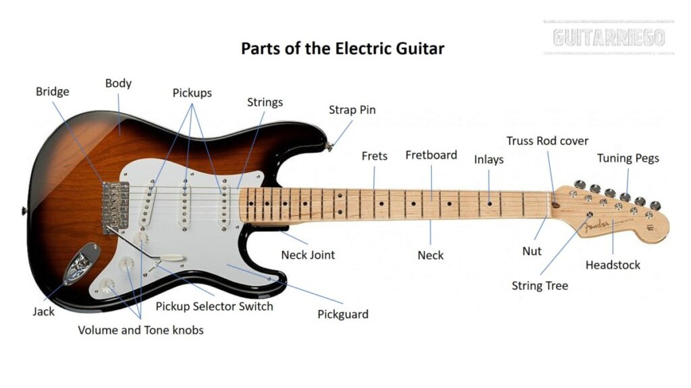
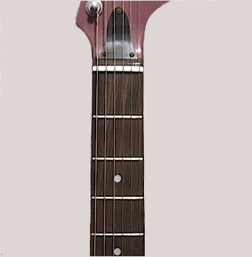
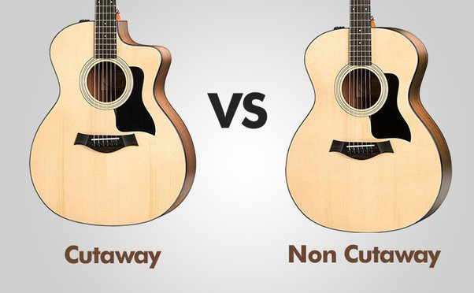
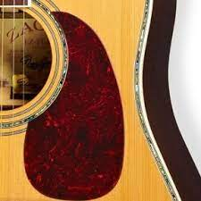
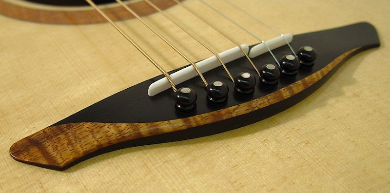
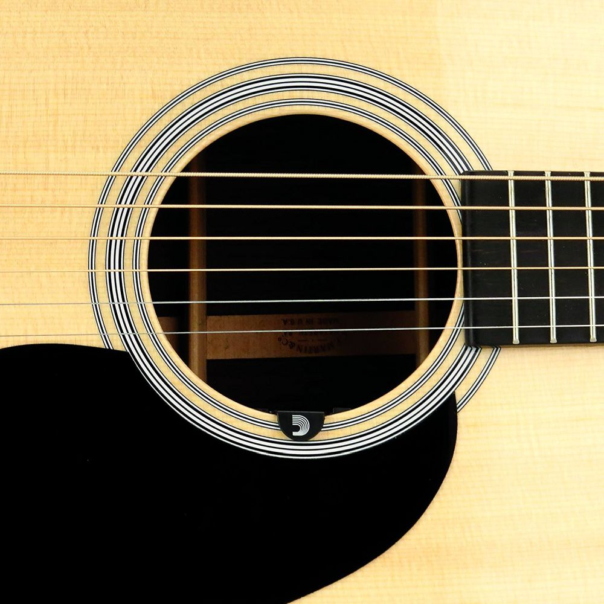

What is music?
Before we take a look at how to play the guitar, let take about music. Music is the act of arranging sounds in time though the elements of melody, harmony, rhythm, and timbre. It's one of the universal cultural in every human life.
Now we have an idea about what music is, let take a look at instrument. An instrument is an object for producing music, such as a piano, guitar, etc...
In this lessons, we will learn How to play the guitar and at the end of this lesson, there will be a "Test" to see how
you really find this note helpful.
Let start with the part of the guitar.

Headstock
The Headstock sits at the top of the neck (opposite the body) where the tuning macjines and nut are installed.
Tuning Machines/Tuning Posts
On a standard guitar, there are tuning machines which include the tuning posts to hold each string in place and tuning pegs that turn to adjust the tuning.
Nut
The Nut is a notched piece of plastic or bone installed where the Headstock meets the fretboard of the guitar. The nut has notches where the strings are seared. These notches keep the strings aligned on the fretboard and pay a role in the sting height.
Neck

The neck of a guitar is the long, thin pice of wood between the Headstock and the body where you'll find the
fretboard, frets, and truss rod. Necks are typically attached to the body with bolts, glue, or sometimes both.
Fretboard
The Fretboard is attached to the top of the neck and is usually made from tonewoods like rosewood, maple, or ebony to prevent dents or warping.The fretboard is a separate piece of wood from the neck and may be the same or a different type of wood, such as a maple fretboard on a maple neck, or a rosewood fretboard on a mahogany neck.
Frets
Frets are the metal strips running across the fretboard. When a string is pressed down behind a fret, it changes the length of the string and produces a different note.
Truss Rod
A truss rod is a long, adjustable piece of metal that is mounted inside the neck and runs the length of the neck,
helping to keep it from bending under the tension of the strings.
Body
The body of your guitar plays a large part in the tonal characteristics of your instrument.
Cutaway

The Cutaway allows a player to more easily reach the highest fret position on the neck.
Upper Bout
The upper bout is the part of the guitar body which is nearest to the neck.
Lower Bout
The lower bout is the largest part of the guitar that is nearest to the string termination at the bridge.
Pickguard

The Pickguard is intended to prevent scratches, dings, and wear from the hard pick of even the most aggressive
strummer.
Pickups
On acoustic guitar the pickup can be in several places. On this guitar in the diagram, the pickup is located under the bridge. The electric guitars come with one, two, or three Pickups, and the placement of the pickup plays a large part in your guitar sound.
Pickup Selector Switch
If your guitar has multiple pickups, a pickup selector Switch allows you to engage single or multiple pickup
combinationand and a wide range of tones.
Knobs/Potentiometers
The Potentiometers, often referrd to as pots, control the volume and tone of your guitar. The tone knob(s) allow you to adjust the amount of high frequency, or brightness, of your guitar, While the volume Knobs adjust the overall output of your guitar.
Output Jack
To get signal out of a guitar, connect one end of a 1/4" guitar cable TS to the output jack and the other end to your amplifier, DI box, pedal or pedalboard, mixer or recording interface.
Strap Buttons
Strap Buttons allow you to attach a strap to your guitar and are typically locatedon the lower bout an upper bout of a guitar
Bridge (13)

A guitar bridge holds the saddle and secures the strings in place using bridge pins.
Soundhole

The hole in the top of an acoustic guitar is called the Soundhole. The hollow body of an acoustic guitar allows the
bass frequencies produced from the strings to resonate and be amplified and then project throught the Soundhole.
Fingerboard
The Fingerboard ia an important component of most stringed instruments. It is a thin, long strip of material, usually wood, that is laminated to the front of the neck of an instrument.
Key
The Key is the root of the scale that a group of chords or notes fall into.
Note
Note are single letter on its own sounds different from a word. A note gives a different sound from a chord. When a single string is picked at a time, it called a Note.
Root Note
In music, a root note is the picth that estabilshes the tone of a musical key, chord, or scale. A root note of a chord gives it a name. For example, in a C major chord, the C note is the root of the chord.
chord
A chord is a set of note played at a particular time.
Strings
A guitar string typically consiste of a thin core with wire wrapped around it. The thicker the string or core, the
lower the pitch. The guitar has 6 strings. They are listed from Low to High, they are: E,A,D,G,B,E.
3 WAYS TO MEMORIZE THE GUITAR STRINGS
1. Every Angry Dog Growls and Bites Eventually
2. Eddie Ate Dynamite Good Bye Eddie
3. Elephants And Dogs God Blesses Everything
The Notes On The Guitar
There are other ways to start learning the guitar but one of the most important way to start a guitar lessons and to master is to learn the notes on the fretboard. When you start learning the guitar by playing chord, you will still need to know the note to get a clear understanding fo the chord. Well, people use to say the long fretboard scare them off...hahah. It's far easier to learn the fretboard than you might think.
The Musical Alphabet On The Guitar
On the guitar, the music alphabet is a little different than the alphabet you learned as a child. With the natural musical alphabet on the guitar, you only have seven notes which are, A, B, C, D, E, F, and G. They are called natural since you have no flats or sharps.
A B C D E F G
Sharps & Flats
Sharps and flats are just half-steps away from the natural notes. The difference between the two is how you move them. When move a half-steps changes the note.
Sharps
Sharps are a half-steps up from a natural note. The sysbom for sharp is #. For instance, a half-step above A is A#
# Sharp = Half-Step Up *
Flats
Flats are the opposite of sharps. One half-step down leads to a flat. The sysbom for sharp is b. For instance, if you step down from A, you will get Ab.
b Flat = Half-Step Down *
Intervals
An interval is the distance between two notes. In this part, we will only learn about the half and whole step intervals. Since we haven't learned key signatures yet.
What are Whole steps and Half step.
On the guitar, the notes are determined by what fret you're holding when you pick the string, unlike the piano where each note is represented by pressing a different key.
Half Step
A half step is the shortest distance you can go, so on the guitar it is the distance between one fret and the next fret up or down. For instance, if you are playing tht 3rd frt - low E string, a half step up would be the 4th fret and a half step down would be the 2nd fret on the same string. keep in mind that the distance between an open string and the 1st fret is a half step.
whole Step
A whole step is equivalent to the distance of two half steps. So if you're playing that same not on the 3rd fret - low E string, a whole step up would be the 5th fret and a whole step down would be the 1st fret.
All the scale on the guitar, we have an order of whole steps and half steps which repeat over and over again. Well, all the musical alphabet also has an order of whole steps and half step. Once ypu know them and have the understanding of that order, you'll be able to figure out any note on the guitar.
This is how it looks like
A BC D EF G
The Rule for BC & EF
On the guitar and even other insturment, all natural note have have sharps and flats between them except
BC and
EF. A half step between these leads to the next natural note. Stepping up from B leads you to C. Stepping down from F leads to E.